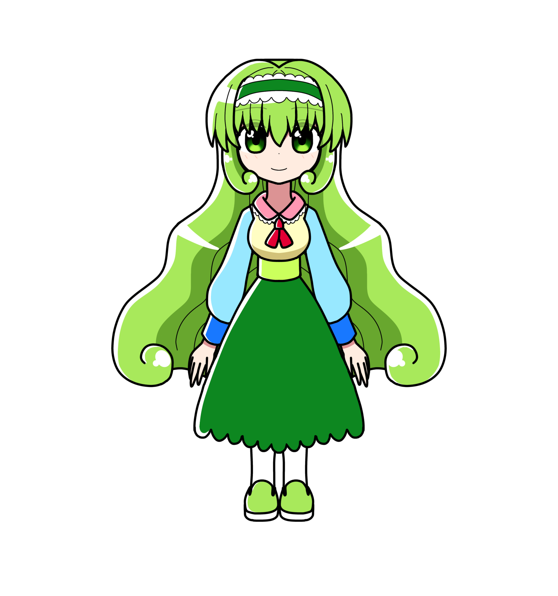

茉優坂 なるみ
茉優坂なるみ（マユザカ ナルミ）
概要
プロフィール
| 種族 | マリオネット |
|---|---|
| 性別 | 女性 |
| 年齢 | 16歳 |
| 誕生日 | |
| 身長 | 167cm |
| 血液型 | |
| 出身 | カロトゥンシティ |
| イメージカラー | 緑 |
| イメージCV | 水橋かおり |
人物像
外見
性格
やや潔癖気味で完璧主義な所があるが、
基本的には優しいお姉さん。
リーダーシップがあり、輪の中心になったりする。
デザインセンスが独特。
なるみ自身が色覚異常ではあるのだが
それとは関係なしに正統派から外れた形の物を
好む節がある。
口調
一人称は「私」
中性口調。
能力
経歴
活躍
実は、本編開始時点で故人である。
あまりにも突然すぎる最期であった。
なるみの死は、
彼女とデートに来たきいろは勿論、
投げ出され身体を強く打った瞬間を見てしまった
リーフ、他にも沢山の友達が大きなショックを与える物であった。
なるみの死後も、時折きいろやリーフの元に現れ、
「どうにか前に進んでほしい」「私はもう止まってしまった」
「けど、あなた達はまだ先がある」と励ましている。
しかしこれは彼らの都合の良い幻覚幻聴である、というのが
最も現実的だろう。